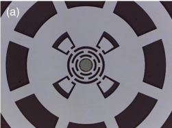
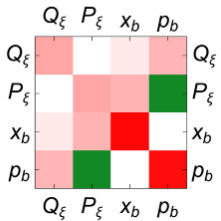

Optomechanics with clamped micro- and nano-fabricated devices
Cavity optomechanics with microfabricated silicon-nitride membranes and micro-oscillating mirrors, designed for very low mechanical and optical losses. We use them for squeezing, quantum-limited measurement and quantum sensing.

Levitated optomechanics
Nanoparticles levitated in optical tweezers, cooled to the quantum regime of their motion. We study quantum phenomena of these mesoscopic objects emerging through their interactions with light, as well as multiparticle interactions.

Foundations, in collaboration with INFN
Tests of fundamental physics with macroscopic oscillators, in collaboration with INFN.
GRAFIQO Current
Gravitational force in quantum optomechanics
An experiment to measure the gravitational force between milligram-scale oscillators.
INFN groups: Florence, Perugia, and TIFPA (Trento Institute for Fundamental Physics and Applications).
Other partners: University of Florence, University of Trento, University of Camerino, CNR (National Research Council, including INO and IMEM), LENS (European Laboratory for Non-Linear Spectroscopy), FBK (Fondazione Bruno Kessler), and Delft University of Technology (Netherlands).
HUMOR Ended
Heisenberg Uncertainty Measured with Opto-mechanical resonators
A search for Planck-scale effects on the dynamics of macroscopic oscillators, which set new limits on deformed commutators.